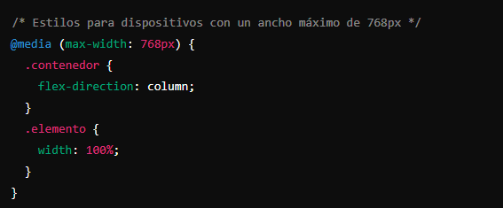
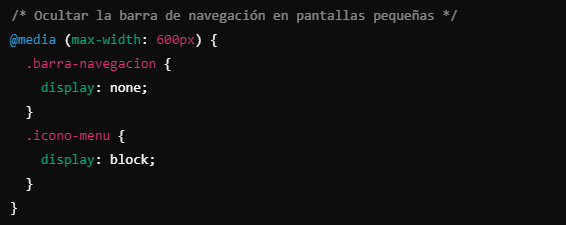
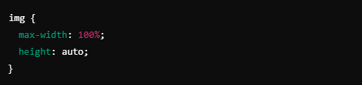

Media QueriesLas Media Queries son fundamentales para adaptar el diseño a diferentes tamaños de pantalla. Permiten definir puntos de quiebre (breakpoints) en los cuales el diseño cambia para mejorar la experiencia del usuario. Por ejemplo, se pueden ajustar tamaños de fuente, reorganizar elementos o modificar la navegación para pantallas más pequeñas. Un ejemplo básico de Media Query en CSS sería: |
 |
Uso de Unidades Relativas y FlexiblesPara lograr un diseño verdaderamente responsivo, es recomendable utilizar unidades relativas como porcentajes, em o rem en lugar de unidades absolutas como píxeles. Esto permite que los elementos se dimensionen de manera proporcional al tamaño de la pantalla o al tamaño de la fuente base, facilitando la adaptabilidad del diseño. Por ejemplo, al definir el ancho de una imagen como un porcentaje del ancho de su contenedor, se asegura que la imagen se escale adecuadamente en diferentes tamaños de pantalla: |
 |
Navegación AdaptativaLa navegación es un componente crítico en las aplicaciones web y debe ser diseñada para ser accesible y funcional en todos los dispositivos. En pantallas grandes, una barra de navegación horizontal puede ser adecuada, pero en dispositivos móviles, es común utilizar menús desplegables o iconos de "hamburguesa" para ahorrar espacio y mejorar la usabilidad. Implementar una navegación adaptativa puede involucrar el uso de JavaScript o CSS para mostrar u ocultar elementos según el tamaño de la pantalla. Por ejemplo, se puede utilizar una Media Query para ocultar la barra de navegación estándar y mostrar un icono de menú en pantallas pequeñas: |
 |
Tipografía y LegibilidadLa tipografía juega un papel crucial en la usabilidad y accesibilidad de una aplicación web. Es importante asegurarse de que el texto sea legible en todas las pantallas, lo que puede implicar ajustar tamaños de fuente, alturas de línea y espaciados según el dispositivo. Utilizar unidades relativas como em o rem para los tamaños de fuente permite que el texto se escale de manera proporcional en diferentes dispositivos. |